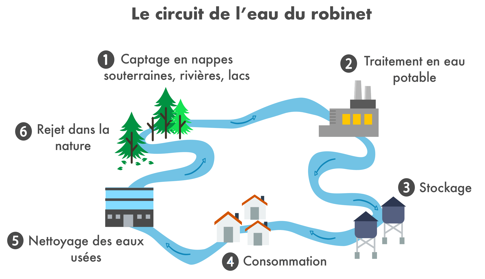
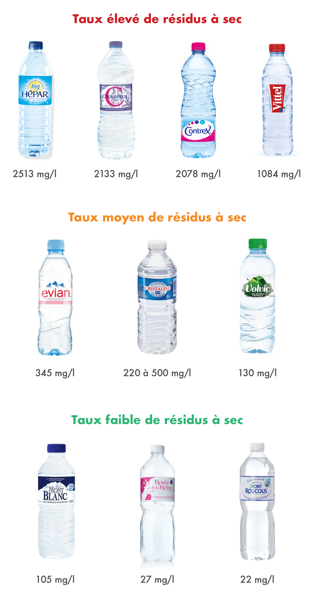
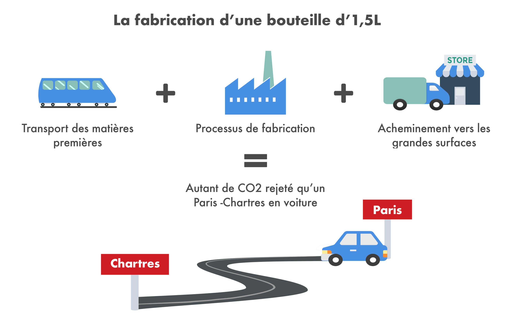

L’eau constitue environ 60% du corps humain. On comprend alors aisément pourquoi il est recommandé de boire 1,5 à 2 litres d’eau par jour, soit environ 600 litres par an. Entre l’eau minérale, l’eau gazeuse, l’eau de source et l’eau du robinet, on a l’embarras du choix pour s’hydrater ! Mais toutes les eaux ne se valent pas. Voici donc un éclairage sur le sujet, rédigé avec l’aide du nutritionniste Anthony Berthou.
Peut-on avoir confiance en l’eau du robinet ?
En France, l’eau du robinet est de bonne qualité. Bien qu’elle soit très contrôlée, elle suscite pourtant la méfiance. Sa potabilité est évaluée par plus de 60 critères, établis par l’OMS et calculés par rapport aux populations les plus vulnérables (nourrissons, femmes enceintes). Ces critères régulent notamment la teneur en minéraux, qui ne doit pas être trop élevée. L’eau est d’abord captée dans la nature, puis traitée, stockée, consommée, nettoyée et enfin renvoyée dans la nature.

Aujourd’hui, les stations de traitement de l’eau se sont multipliées et la pollution par les nitrates et les pesticides devient très rare. Concernant le plomb, l’eau distribuée en contient très peu. Seules les canalisations des bâtiments anciens et non rénovés peuvent encore être en plomb. Dans ce cas, après une période sans utilisation, l’eau stagnante peut se charger en plomb. Il est donc recommandé de laisser couler un instant l’eau du robinet avant de la consommer.
En fonction des régions, l’eau du robinet est plus ou moins chlorée afin de détruire les bactéries qui peuvent s’y trouver. Consommé en excès, le chlore favorise l’acidité du corps. Mais, sa quantité dans l’eau est très faible et ne représente pas une raison fondée d’éviter l’eau du robinet. De la même manière, si le calcaire donne un goût désagréable à l’eau, il est en revanche sans danger sur la santé.
Certains mettent en cause la présence de résidus de médicaments dans l’eau. À ce jour, aucune étude scientifique n’a prouvé leur présence significative, ce qui ne signifie toutefois pas qu’ils soient totalement absents.
Les carafes filtrantes sont-elles vraiment utiles ?
En France, la confiance en l’eau du robinet reste très relative. Des systèmes de filtrages sont alors adoptés dans le but d’obtenir une eau d’encore meilleure qualité malgré les nombreux contrôles déjà effectués. Mais selon l’Agence Nationale de Sécurité Sanitaire (ANSES), l’efficacité de ces carafes est contestable. Les cartouches de filtration se révèlent ainsi être des nids à microbes et les carafes filtrantes contribuent alors à la propagation de microbes dans l’eau.
L’eau du robinet est le produit alimentaire le plus contrôlé en France, sa consommation est donc sans danger pour 95,6% des consommateurs. Cependant, encore 4% de la population française reçoit une eau non conforme, essentiellement dans les régions d’agriculture intensive, et dans les petites communes rurales. Les régions les plus concernées sont le Loiret, la Seine-et-Marne, l’Yonne, l’Aube, la Marne, le Pas-de-Calais et la Somme. Pour connaître la qualité de l’eau de son lieu d’habitation, vous pouvez vous rendre sur la page dédiée du gouvernement pour vérifier.
Comment choisir son eau en bouteille ?
Les eaux en bouteille sont naturellement potables, et ne subissent aucun traitement. Il existe deux types d’eau en bouteille :
- Les eaux de source : Elles proviennent de nappes d’eau souterraines situées dans toutes les régions de France, et sont soumises à la même réglementation que l’eau du robinet. Elles doivent remplir tous les critères de potabilité et contiennent donc à peu près autant de minéraux que l’eau du robinet. Elles ne subissent aucun traitement, ces eaux sont ainsi plus pures que celle du robinet, même si la différence reste très faible.
- Les eaux minérales : Leur origine est souterraine, tout comme l’eau de source. Par contre, elles sont soumises à des normes spécifiques et peuvent atteindre des fortes teneurs en minéraux qui ne sont pas tolérées pour l’eau du robinet.
Le premier élément à prendre en compte dans le choix d’une bouteille d’eau est la quantité de résidus à sec qu’elle contient. Il s’agit de la quantité de minéraux (sodium, magnésium, sulfate, calcium,…) restants une fois que l’eau est évaporée. Contrairement à ce que l’on pourrait penser, une bonne eau est une eau peu minéralisée. Une consommation excessive de minéraux peut être néfaste pour l’organisme. La présence de minéraux en grande quantité dans l’eau peut interagir avec ceux apportés par l’alimentation, réduisant l’assimilation de ceux-ci. Le résidu à sec doit ainsi être idéalement inférieur à 100mg/l. Il est identifiable après les valeurs nutritionnelles de la bouteille par les mentions : “résidus à sec à 180°”, “extrait sec à 180°”, “teneur total en sels minéraux à 180°.
De manière générale, les eaux minérales doivent donc être consommées de façon limitée. Elles sont souvent trop riches en sodium et autres minéraux. Certaines seraient refusées en réseau public de distribution à cause de leur trop fort taux en minéraux. L’argument souvent mis en avant par ces eaux est que la présence de minéraux permet de réduire certaines carences, notamment en calcium et en magnésium. Or, l’assimilation du calcium et du magnésium de ces eaux est faible. Ainsi, ces eaux ne présentent que peu d’intérêt particulier et ne doivent pas faire l’objet d’une consommation quotidienne. Lorsque l’on est carencé, l’eau minérale n’est pas une solution : les déficits en magnésium ou en calcium ne peuvent pas être restaurés avec de l’eau, ils doivent être restaurés à travers une meilleure alimentation.
En revanche, les eaux de source contiennent nettement moins de minéraux et peuvent convenir pour une utilisation au quotidien. Elles sont intéressantes en remplacement de l’eau du robinet, quand celle-ci possède un goût de chlore trop prononcé par exemple ou dans les régions rurales polluées.

Le deuxième élément à considérer est le pH de l’eau. L’estomac est un milieu très acide, et la consommation d’une eau trop basique (à l’opposé de l’acidité) peut perturber la digestion gastrique. Le pH de l’eau doit donc être neutre à légèrement acide (compris entre 6,5 et 7). Sur l’étiquette, l’indication du pH se trouve après celle des résidus à sec.
Des particules de plastiques dans l’eau en bouteille ?
L’eau en bouteille de nombreuses marques est contaminée par de minuscules particules de plastique qui se détachent et migrent dans l’eau. Le risque de transfert des particules vers les aliments est d’autant plus élevé avec la chaleur et la lumière, qui contribuent à la dégradation du plastique (voir notre article sur les emballages).
Pour le moment, les dangers sur notre santé sont encore méconnus et des études approfondies sont nécessaires pour savoir si l’on doit réellement s’inquiéter de leur présence.
L’eau gazeuse est-elle intéressante ?
L’eau gazeuse peut être consommée en petite quantité lors de gros repas où l’acidité de notre estomac devient très élevée, ou pour les personnes qui souffrent d’acidité gastrique. En effet, elle favorise la digestion car le bicarbonate contenu dans l’eau contribue à la neutralisation de l’acidité produite lors de la digestion et régule le pH d’un estomac trop acide. Néanmoins, elle est à éviter en cas de ballonnement car elle libère du gaz dans le tube digestif.
Par ailleurs, le bicarbonate est utile aux sportifs pour diminuer l’acidité qui a été produite en quantité par les muscles pendant un effort. Cette acidité, appelé acide lactique, est à l’origine de courbatures et de douleurs musculaires. Suite à un effort, la consommation d’eau gazeuse va alors permettre de réduire plus rapidement la fatigue musculaire, en régulant l’acidité tissulaire, et ainsi accélérer la récupération.
Les eaux gazeuses peuvent être consommées de temps temps mais ne doivent pas composer l’apport majeur d’eau pour le corps car elles sont chargées en minéraux. Dans les deux cas précédent, il vaut mieux privilégier une consommation occasionnelle d’eau gazeuse la moins minéralisée possible et riche en bicarbonates de sodium (>600mg/l).
Et l’environnement dans tout ça ?
La production d’eau en bouteille est un processus extrêmement énergivore. Entre le transport des matières premières, le processus de fabrication, et l’acheminement vers les grandes surfaces, c’est un bilan de 8kg de CO2 rejetés par litre d’eau. C’est à dire autant qu’une voiture qui roule 80 km, pour une seule bouteille d’1,5L.
Par ailleurs, une fois bues, les bouteilles finissent soit en décharge, en incinérateurs, en centre de recyclage, ou dans la nature. La décharge et l’incinération sont des options posant problème car elles libèrent des toxines dans le sol que nous cultivons et dans l’air que nous respirons.

L’eau du robinet bénéficie la plupart du temps d’un système de distribution beaucoup plus rentable et moins énergivore que pour l’eau en bouteille.
Finalement, que faire ?
- Pour votre consommation quotidienne, privilégiez l’eau du robinet, peu chère, de qualité et respectueuse de l’environnement.
- Si son goût ne vous plait pas ou si vous êtes dans une région à risque, préférez une eau de source très faiblement minéralisée avec un taux de résidus à sec inférieur à 100mg/l et un pH situé entre 6,5 et 7 (Mont-Roucous, Montcalm, Rosée de la Reine).
- Evitez les eaux minérales. Si vous êtes carencés, ne voyez pas l’eau minérale comme la solution et essayez de combler vos carences à travers une alimentation plus adaptée.
- Suite à un effort ou un repas copieux, vous pouvez boire un verre d’eau gazeuse riche en bicarbonate pour diminuer l’acidité du corps (Vichy Célestins, Vichy ST Yorre, Rozana, Quézac, Badoit).
Pour approfondir le sujet, vous pouvez consulter l’article d’Anthony Berthou sur l’eau et la récupération du sportif : http://www.sante-et-nutrition.com/hydratation-effort/

Et d’où vient le fluor?
Ce déchet toxique , comment arrive-t-il dans nos bouteilles ?
Il y a aussi l’eau de source Laqueuille avec un résidu sec à 180°C: 74mg/l – ph : 7,5
Avec un prix abordable.
Quels sont les inconvénients,pour la santé, de boire une eau trop calcaire. Merci
Que pensez vous des filtres à charbon activés type grohe blue pure?
Pour filtrer les métaux lourds?
Bonjour,
Merci beaucoup pour cette article complet, j’aimerais partager mon expérience autour de l’eau :
L’eau du robinet est potable mais morte.
Elle est surchargée en polluants (comme le chlore, le calcaire sous forme de Calcite, les métaux lourds, les pesticides, la radioactivité et quelques fois des virus et bactéries…)
Elle circule dans des canalisations rectilignes qui déstructurent l’eau. D’après les travaux du Chercheur Viktor Schauberger, l’eau dans la Nature circule en suivant des mouvements en spirales, ce qui permet la réoxygénation et la restructuration de l’eau au niveau moléculaire.
Notre corps est constitué à plus de 96% d’eau au niveau moléculaire et 70% en volume.
Boire une eau pure et vivante est indispensable pour une bonne santé, en plus d’une alimentation Bio ou l’équivalent, une activité physique, une bonne gestion des émotions, limiter l’exposition aux ondes…
Pour cela la meilleure façon est d’utiliser un purificateur et dynamiseur (par mouvements vortex) de l’eau.
Pour en savoir plus, je vous invite à aller sur ce site où il y a des solutions concrètes :
https://be-onde.com
Merci 🙏🙏 pour vos informations toujours très utile , Blomy est vraiment géniale , qd je fais mes courses avant d acheter ,je vous ce que dit Blomy 😉
Le discours scientifique ou pseudo scientifique sur la pureté de l’eau me rend malade !Merci Blomy des éléments clairs apportés !
Merci car grâce à ce site je réussi tous mes devoirs et exposés de S.V.T
Au final faire bouillir son eau du robinet source sur je pense
Toutes mes excuses, j’ai envoyé mon message trop vite.
Merci pour votre réponse.
Bien cordialement
Mme Octave
Bonjour,
Je recherche une eau en bouteille avec le moins de magnésium.
Bonjour.je suis dans l’ambarat du choix pour installer des filtres domestiques entre polyphosphore ,membrane,charbon,sable.que dois-je choisir.merci
Avec quelle eau je dois utilisée pour la tisane? Merci
Personnellement, je prends de l’eau de source pour faire mes tisanes, car j’ai remarqué que l’eau du robinet est trop calcaire.
Anonyme
Bonjour.je suis dans l’ambarat du choix pour installer des filtres domestiques entre polyphosphore ,membrane,charbon,sable.que dois-je choisir.merci
L’eau de source est-elle contrôlée du point de vue
Radioactivité résiduelle?
Merci pour toutes vos recherches je voulais connaître eau gazeuse la plus diuritique merci
Je prends différentes eaux minérales ayant des calculs rénaux type oxalate de Ca demande du toubib
Trop De Ca dans l’eau du robinet donc je suis coincée .Pas top mais que faire?
L’eau hepar est-elle indiquée en cas de diabète ?
Bonjour ! Merci pour cet article très intéressant. Cependant il serait bien de répondre aux questions des lecteurs/utilisateurs.
Lorsque l’on scanne les bouteilles d’eau ces infos pourraient être données.
Bravo pour votre travail et on attend des réponses.
Merci pour ces explications . Cela m’a ouvert les yeux . Je vais de ce pas prendre de l’eau non mineralise. Merci.
Bonjour, j’hésite à investir dans un système avec des filtres type cullingan. Pourriez-vous me donner votre avis sur ces produits qui sont onéreux. 1750€.plus un contrat d’entretien de 118 tous les ans.Merci d’avance
Merci pour tout très utile pour les consommateurs
Bonjour,
il serait intéressant d’ajouter un paragraphe sur le eaux gazeuse faite maison avec des systèmes tel que Sodastream (sans forcément citer la marque).
Est-ce bon pour la santé ? pour l’environnement ? Est-ce recommander ou déconseillé par rapport a des bouteilles plastiques du commerce.
Merci
Bonjour,
Je vous propose de lire cet article pour remettre quelques pendules « hydriques » à l’heure : https://lanaturedeleau.blogspot.com/2019/09/article-quelles-eaux-boire-revue.html
Je cherche une eau disponible en France
Magnésium potassium maximum
Sans soduim surtout carence
Avec ph de 6.3 maximum
Je fais actuellement une sistite quelle eau je dois prendre
Merci
Je voudrais casser le mythe des carafes filtrantes de Natura blue svp je cherche des infos sur cette tromperie, vous avez sûrement les infos
Bonjour,
J’habite une région dont l’eau du robinet ne pose pas de problème majeur, par contre est il utile d’acheter un purificateur d’eau pour faire encore mieux ?
merci beaucoup pour toute ces info j’adore l’applications
Merci.Julie
Je boit vichy célestin 1l500 a’
2 LITRES
Je bois 1 à 2 litres de vichy célestin par jour mais vu le sel qu’elle contient et le bicarbonate je vais choisir l’eau du robinet. Celle ci je la trouve insipide, je prend des médicaments et je dois boire beaucoup. Vos informations son précieuses lorsque l’on ni connaît rien merci.
Merci Blomy pour toutes ses infos!
Je suis fan de votre site et de l’appli!
Bonjour.
Je ne suis pas très bavard, mais je vous remercie pour les merveilleux articles que vous faites et qui enrichissent ma base de connaissances qui est très limitée.
Très intéressant !! Moi je prend celle du robinet . Merci Yuca !😃👍
À l’occasion de travaux dans mon immeuble j’ai vu une coupe du tuyau principal d’alimentation : l’accumulation de dépôts (solidifiés) sur la surface interne ne donne pas envie de boire l’eau qui passe par là. Il faudrait tester l’eau à la sortie de chaque robinet.
Heureux d’avoir téléchargé et utilisé l’appli : bravo à l’équipe 👍
Moi je boit de l’eau wattwiller et j en suis contente
ou trouver une eau en bouteille ?
B
Ben Nicole, sérieux ? tu sais pas ou trouver de l’eau en bouteille ?
Bouteille en verre ou bouteille en plastique ?
Nous disposons également d’eaux minérales reconnues d’intérêt public que l’on appelle EAUX MÉDICINALES, notamment pour des cures thermales. Les eaux minérales fortement minéralisées peuvent être excellentes pour la santé à condition de ne pas toujours consommer la même tous les jours.
Très bon article, bien écrit, clair, précis et persuasif… MAIS les infos sont-elles SI JUSYES QUE CELA. Encore faut-il les vérifier soi-même oar d’autres sources scientifiques de « BORDS DIFFERENTS ET QUI SE CONFRONTENT »… Il y a tellement d’infos et intox mélangées sur internet.
Il y a toujours de gros interets partout et dans tout . J’ai vu un producteur d’eau de source qui ventait les biens-faits de son eau se retrouver au tribunal face aux eau de Paris car il disait publiquement qu’il ne ne verrait pas boire l’eau de ses propres « »chiotes » » . . Moi je ne bois que de l’eau de source, elle est saine et tellement abordable pour tous !
Merci Blomy!!!
Je vais me remettre à l’eau du robinet merci pour toutes ces infos
la rivieère
peut transporte d’ autre polutions que celle du village
Votre programme est génial. Merci beaucoup Blomy!
Article intéressant. L’eau de chez moi est tellement calvaire que j’ai adoucisseur et osmoseur culligan. Est ce bien ? Je suis entourée de terres agricoles. Merci pour votre réponse. Cordialement
J’ai un adoucisseur. Puis je boire l’eau du robinet au quotidien?
Article très explicite. Cela m’a ôter quelques doutes que j’avais Merci Blomy
article très intéressant et très instructif pour moi. merci
merci pour cette information très claire.
Merci pour cette information très claire.
Je pense que vous vous bouchez les yeux car l’eau du robinet où s’en bouteille n’est pas bonne pour la santé à cause de la dioxine dans l’eau en bouteille et les métaux lourds , comme le mercure, le plomb, les hormones de croissance, les pesticides, cuivre sélénium amiante baryum nitrates , les solvants herbicides engrais antibiotiques bactéries virus giardia intestinalis etc que le chlore ne détruira pas.
article TRES interessant qui me conduit vers l’eau du robinet
Oui
Bonjour,
Que pensez vous de l’eau distillée?
je pense acheter un distillateur (Megahome) et boire au quotidien de l’eau distillée à la quelle j’ajouterai un peu d’eau de Quinton.
N’est ce pas la solution lameilleure pour la santé?
Bonjour, pourriez vous nous faire un retour sur votre expérience avec le distillateur d’eau ?
Êtes vous toujours vivant ?
Je fais partie d’une association pour la défense de la qualité de l’eau. Malheureusement les pouvoirs publics sont manipulés et influencés par la brillance des avantages proposés par les grands groupes qui monopolisent le marché. Ils utilisent des eaux surpolluées, traitées insuffisamment que des laboratoires INDEPENDANTS déplorent comme toxiques….Malheureusement c’est le business qui a raison comme toujours !
C’est probablement pour cette raison que dans certains endroit l’eau du robinet est tellement chlorée qu’elle en est imbuvable m^me reposée pendant une heure au réfrigérateur .
Bonjour,
J’aimerais savoir si vous avez des informations sur la véritable utilité ou non des morceaux de charbon à mettre dans l’eau du robinet. Cela aurait des « vertus purifiantes ».
Merci
Bonjour à la communauté Blomy,
Merci pour cet article très intéressant et enrichissant qui aborde une problématique de taille la qualité de l’eau que nous buvons ! Heureusement, en France et en Europe, l’eau des réseaux est l’un des composants les plus contrôlés par les instances publiques. Moins coûteuse elle est surtout bien plus respectueuse de l’environnement ! Merci de le préciser. Pour autant, l’eau du robinet possède toujours des traces de la pollution. L’eau micro-filtrée est alors l’une des meilleures alternatives. Elle permet d’avoir une eau plus pure, mais aussi plus respectueuse de notre planète.
Je ne vais pas m’étendre plus, mais je vous recommande la lecture de cet article, qui est très complémentaire du vôtre : https://www.aquachiara.com/fr/choisir-eau-micro-filtree-secret-bonne-sante/
Merci,
Pouvez-vous me donner la référence de ce que vous affirmez, que l’ANSES dit que les cartouches filtrantes s’avèrent être des nids à microbes.
Il m’a suffit de copier « ANSES dit que les cartouches filtrantes s’avèrent être des nids à microbes. » sur google et j’ai trouvé la réponse.
Toujours au sujet de l’eau,…https://eaukey.com/index.php/2017/11/28/le-saviez-vous/
Sur quels. Critères se base « Yucca » pour donner son appréciation sur les produits et comment contrôler la véracité de cette appreciation
Bonjour je découvre vôtre application et je tenais à vous féliciter 🤗
Bonjour,
je bois de l’eau du Mont Roucous depuis des années, pour mon plus grand bien… pas d’eau du robinet ou très rarement, déconseillée par mon homéopathe 🙂
Merci pour cet article,
Natacha
Hello,
Je trouve le commentaire sur l’assimilation du calcium et du magnésium très étrange, quand on sait que l’OMS a publié diverses études sur la question et que le résultat admis par la communauté scientifique est l’inverse de celle présent dans ce rapport:
http://apps.who.int/iris/bitstream/handle/10665/43836/9789241563550_eng.pdf;jsessionid=3954003C0132931B899C2D3FA52731F9?sequence=1
(page 51)
la formule chimique des mineraux n est pas la meme et ceux la sont de formes ioniques et donc peu assimilable.. pour plus d info mon blog : http://www.semineraliser.com
Très intéressant mais problème: vous indiquez que l’eau d’Hépar est celle qui contient le plus de résidus à sec et lorsqu’on la scanne sur l’appli, vous lui attribuerez la note excellent ! Où est l’erreur ? Bien à vous, continuez.
Article intéressant mais j’aurais apprécié d’y trouver un avis sur la consommation d’eau distillée car c’est devenu une pratique conseillé par certains médecins et je me questionne à ce sujet… bon ou mauvais ?
Une réponse ici => https://eaukey.com/index.php/2018/01/16/conseils-medecin-eau-distillee/
merci pour cette étude plutôt complète et bien rédigée
Vous ne mentionnez pas :
L eau de la Fontaine de la Reine, Castelnau de Brassac 81260, Mr Pascal Valera
Résidus à sec = 19 mg/l Ph : presque neutre
Je vous invite à documenter pour parfaire l’ information des consommateurs
même si ce n’est pas me but de votre article l’impact des bouteilles en plastique sur l’environnement est très peu alarmant. il devrait à mon sens, orienter sans appel vers une consommation robinet.
« Rien qu’en France, on boirait 9,3 milliards de bouteilles d’eau par an. Seule une bouteille sur deux serait recyclée. 450 000 tonnes de bouteilles et flacons en plastique se déversent ainsi chaque année dans nos poubelles ». la majorité termine dans les océans.
https://observatoire-des-aliments.fr/environnement/ocean-de-bouteilles-plastique
Chaque année, jusqu’à 13 millions de tonnes de plastique se retrouvent dans les océans, faute d’être recyclés
Bonjour
Vous pouvez regarder cette vidéo : https://youtu.be/A-5Tu4FWSys
Cordialement
Bonjour
J’aime votre site, mais pourquoi noter des œufs « produit en rhône alpes » par des poules élevées en cage 90/100
et des oeufs « Moison » label rouge par des poules élevées en plein air 78/100 ,
je ne comprends pas
Cordialement
qu’est ce que ça vient faire là ?
Bonjour
Merci beaucoup pour votre site j utilise pour faire mes courses
Je prends aussi en compte vos commentaires sur les articles ou aliments ex eaux super 👍 de nous aider car trop de mensonges sur les étiquettes et beaucoup de mots incompréhensibles
Merci à vous et votre équipe continuer
Super !
Merci pour toutes ces explications.
cela fait plus de 30 ans que je propose des osmoseurs, c’est la seule façon d’avoir de l’eau réellement débarrassée de tous « les résidus en suspension dans l’eau » Soyez curieux et contrôlez par vous même le sérieux de l’info » Notre corps fonctionne avec l’osmose inverse.
pour faire un litre d’eau osmose, combien de litres partent à l’égoÛt ?
j’ai eu un osmoseur, never again…..
la façon la plus simple pour avoir de l’eau sans problème c’est d’avoir un véritable osmoseur
https://www.dropbox.com/s/0433lj4r1u7tcjm/COMMENT%20PEUT-ON%20FAIRE%20APPARAITRE%20LES%20PARTICULES%20EN%20SUSPENSION%20DANS%20UNE%20EAU%20QUELCONQUE2%3F%20-%20%20%C2%ABPAR%20L%CA%BCELECTROLYSE%C2%BB%20EXPLICATION%20PAR%20L%CA%BCIMAGE.pdf?dl=0
Bonjour ! Merci pour votre article.
Il serait intéressant de pouvoir repondre aux questions posées par les lecteurs/utilisateurs.
Bonjour, une question que je me pose depuis quelques jours, est t il normal que je ne peux plus utiliser blomy dans le centre commercial de carrefour lors de mes achats ? je perd la connexion plus de contrôle. Avant je n’avais pas ce problème, y a -t-il d’autres personnes dans mon cas?
Bonjour il faut que vos données mobiles soit cochées dans vos réglages. Bonne journée
Bonjour
est ce que je peux avoir un exemple d’une recette ??
Vous en remerciant à l’avance
bonjour et ce que je peu boire de la salveta ?je me force a boire car je boit très peu jais subi une grosse opération des intestin .la nuit coucher jais la bouche les lèvre et le palé qui me brûle donner moi un conseil merci beaucoup marie
non
Bonjour, d’abord merci pour votre site fort intéressant.
Au sujet de l’eau précisément, étant un buveur de thé, je n’utilise que de l’eau de source. En particulier j’achète l’eau de source de montagne d’Auvergne d’une teneur en résidus de 52,2mg/l ce qui en fait une eau particulièrement bonne tant par sa qualité que par son goût. Quant au prix, 0.17 euro/l il est nettement moins élevé que celui du filtrage de l’eau du robinet par carafe filtrante et pour un un résultat tout autre.
oui! c’est un fait que l’eau du robinet en France est plutôt de bonne qualité sauf qu’il y a une grande disparité régionale et locale. Ainsi l’eau de Grenoble est exceptionnelle tandis que là où j’habite, c’est à dire à Solutré-Pouilly dans le Mâconnais, zone de viticulture intensive et sans contrainte quant aux produits phytosanitaires utilisés, il en va tout autrement.
Certes, quand la communauté de communes publie le résultat des tests ils sont dans la norme sauf que ces tests sont rarement faits et de préférence quand la vigne ne reçoit pas de traitement.
En plus c’est une eau très calcaire qui pose pas mal de problèmes pour les équipements et circuits d’eau. D’où l’usage dans la région Mâconnais d’adoucisseurs ce qui n’arrange pas les choses pour la consommation.
On se moque royalement du consommateur. Je pense que bien d’autres régions sont affectées et je pense à la Bretagne par exemple ou à la Beauce.
Autant dire que la notion de moyenne nationale a très peu d’intérêt.
Dommage que l’on puisse pas mettre une image sinon j’aurais mis celle de la bouteille d’eau de source dont je parle et serait tout à fait à sa place dans celles que vous présentaient.
bonjour, votre appli me plait beaucoup alors que je la découvre aujourd’hui,
concernant l’eau que pensez vous des machines de gazéification de l’eau du robinet?
Attention, il y a bien des années déjà qu’il a été démontré scientifiquement que les courbatures ne sont nullement dues aux toxines. Il s’agit du premier stade de lésion musculaire. Celle-ci est bénéfique et d’évolution très rapide mais l’hydratation n’aura aucun impact directe sur celles-ci (et les étirements sont clairement à proscrire)
BJR En final du circuit de fabrication de l’eau on trouve le recyclage des bouteille en plastique ……
Pour le calcaire, éviter les adoucisseurs à résine car il enlève aussi le magnésium très utile. L’idéal est de convaincre ses élus de faire une décarbonatation en usine par décantation qui préserve le magnésium dans l’eau du robinet.
Le chlore ajouté est là pour nous protéger des germes et bactéries au cours de son transport (renforcement du à vigie pirate…). Heureusement, une fois sorti du robinet , ce chlore est EXTREMEMENT VOLATILE !
Une eau du robinet mise en carafe et au frigidaire ne contient plus aucune trace de chlore après 20mn d’aération. La démonstration de cette volatilité est qu’initialement, le chlore était seulement injecté en usine traitement et donc des points du réseau éloignés en était totalement dépourvu et pouvait être cause de danger potentiel.
La plupart des réseaux modernisés l’injectent en différents points et en vérifient la teneur de manière journalière. Être proche d’un point d’injection peut être la cause de différence d’appréciation de consommateurs d’un même territoire.
L’eau du robinet est certainement le produit alimentaire le plus sûr et le plus surveillé.
En France, sa vertu souvent oubliée, est que c’est le seul produit dont la facture prend en compte tous ses couts productifs et écologiques de sa « chaine de vie », de son extraction à son rejet en milieu naturel. Aucune autre ressource naturelle n’a cette vertu.
C’est aussi le produit, à qualité égal (et parfois supérieur) de très loin, le moins cher !
3,5€ /m3 – Cristalline 300€/m3 – Evian 850€/m3 – Perier rondelle en terrasse 10.000€/m3 ;o)
Le premier indicateur de crise économique et de perte de pouvoir d’achat (Credoc), se juge à la baisse des ventes d’eau de source et minérale. On comprend pourquoi.
Dernier chose : ce produit exceptionnel peu cher, vous est livré (soit une livraison en moyenne d’1/2 tonne) quotidiennement …à l’étage
Bonjour, Trés intéressée par ce que nous consommons, j’apprécie beaucoup votre appli.
Ceci dit, il semble que votre site fasse la part belle sur l’eau du robinet. Malheureusement, le taux de nitrate qu’elle contient avec les pesticides et autres ingrédients que nous y trouvons n’est pas pour nous sécuriser. De plus, on peut s’interroger lorsque l’on consulte le site du gouvernement
pour connaître la nature de l’eau du robinet de son lieu d’habitation les taux de ces derniers n’y sont pas figurés…
A mon avis, je pense qu’il faut consommer autant de l’eau en bouteille que de l’eau du robinet pour notre bien être à tous.
Ce sont , malheureusement, les mêmes taux que nous retrouvons dans les eaux de source et minérales. Pas seulement parce que la réglementation est la même pour les trois mais parce que tous les aquifères sont touchés par cette pollution. Bizarrement les eaux de rivières traitées et distribuées sont moins chargées, quoique….
C’est passionnant, dans mon cas ne négligez pas le conseil de ce que je peux consommer et même la marque, merci mille fois
Merci je m étais mis à boire de la rozana quotidiennement en fait fallait pas
Je vais me remettre à l eau du robinet
Merci encore
Super article je viens de prendre conscience qu’il faut regarder le RAS et en tenir compte ! Merci pour vos informations !
Bravo à toute l’équipe pour toutes ces recherches, organisation…je suis toujours très intéressée par votre blog, et bien sûr par la qualité des produits que je consomme. Je souhaite une longue vie à votre excellente startup !
Pour moi tant que les bouteilles seront en plastique je n en acherais pas tant pis pour les microbes si c est vrai je prefere carafe avec filtre merci
Bien réfléchi ! On écrira en épitaphe : « Elle avait des convictions mais elle avait oublié certains principes élémentaires. »
Bonjour, il suffirait d’enlever le filtre et d’avoir une simple carafe pour s’éviter les microbes qui s’entassent dans le filtre.
tres bien pensee …bravo que du profit..bon si cela donne des emploies ..et puis bof
merci pour votre tres beau travail. Je diffuse beaucoup votre appli sur l’alimentation et les cosmetiques. .
je dois boire de l’eau non chlorée, suite à une importante opération du palais buccal. je me suis mise à boire de l’eau plate en bouteille. L’eau du robinet m’était déconseillée. maintenant je constate que le plastique issu du pétrole, n’est pas biodégradable et est très énergétivore comme vous le faites remarquer. Comment faire. Tous les etals de supermarchés ne proposent que des bouteilles plastiques (ainsi que les produits d’entretien et les produits laitiers).
L eau contenant du chlore et ses dérivés chlorés est nocive pour notre santé. Informez-vous.
http://www.eaukey.com
« Eaukey » est un site marchand qui vend des distillateurs d’eau. Donc informations entachées de conflit d’intérêt.
Bonjour, nous avons investi dans un osmoseur et en sommes très content. Nous avons maintenant de l’eau très pure sur un deuxième petit robinet, sur l’évier. Mieux que de l’eau en bouteille et sans déchet!
Bonsoir ou trouve t on ses osmoseurs merci pour votre réponse cordialement jane
Ayant discuté avec une personne responsable du traitement des eaux potable sur Paris, je vous déconseille de boire l’eau parisienne dans les 10/15 premiers jours de chaque mois.
En effet, la totalité des produis permettant un assainissement correct est déversée (pour le mois) le 1er … Cela entraine lors des 1ers jours une teneur beaucoup trop importante sur certains produits (toxiques ?) devant traiter ces eaux.
Article fort interessant, grand Merci😊
mais que dire de l’eau du robinet gazéifiée ? Conserve t elle les mêmes vertus et quid l’apport du bicarbonate ?
J’ai apprécié vôtre étude sur les différentes eaux que nous consommons au quotidien : quand le moins coûteux est à préférer sur les eaux en bouteille plastique qui ont un prix !
tres bon conseil
Bon article et bons conseils avec de bonnes informations si vous pouviez donner un peu plus d’infos sur les systèmes filtrants dont les carafes type « Brita » ce serait intéressant ! Merci pour tout et bonne continuation !
Un peu d info en voilà https://eaukey.com/index.php/quelle_eau_boire/
J’ai adopté un distillateur d’eau Méga Home et je suis passée de 360 PPM à 0.
Perso, cela me convient très bien.
Bonjour, merci pour cet article simple que je vais essayer de soumettre auprès de mon public (personnes âgées). Les multinationales sont toujours gagnantes dans cette histoire…
bonjour merci de citer vos sources bibliographique de maniere exhaustives..
pour un sujet aussi senssible que l eau de consomation l origine de vos sources est primordiale
bonjour votre article sur l’eau est intéressante , mais j’utilise l’eau du robinet que je gazéifie , je n’ai pas la réponse à cette solution ; pouvez vous me donner la réponse à l’avance merci
Merci beaucoup pour votre article très intéressant, instructif et complet.
Je vais suivre vos conseils et changer mes habitudes.
J’adore votre appli et vos mails d’informations utiles.
Cordialement
Bonjour à toutes et à tous
j’attendais une appli qui me corresponde et vous l’avez fait
J’aimerai participer : comment ? Quoi vous envoyer
A 72 ans j’aimerai une petit conseil
Merci ; courage et en contrepartie je vous conseille
LES TABLES CIQUAL, je crois devraient vous intéresser (tous es composants d’une aliment vitamines comprises que j’utilise pour bannir la vitamine K et surveiller la E du même produits
A bientôt
Cordalement
Beaucoup de questions ont été posées.
Comptez-vous faire des réponse ?
Merci
Vous trouverez pas mal de réponses ici => https://eaukey.com/index.php/quelle_eau_boire/
je souhaiterais recevoir vos mails
Bravo pour cet article sur l’eau ou les eaux dont les conclusions rejoignent ce que nous en pensions déjà intuitivement. Adieu ces fichues bouteilles lourdes à porter, pénibles à recycler. Toutefois quand il fait très chaud l’eau plate du robinet est fade. Certains y ajoutent des pelures de Gingembre et quelques gouttes de jus de citron et /ou une pincée de NiGIRI (Chlorure de Magnesieum). C’est agréable mais Est-ce recommandable ? bien à vous , Sabine SS
Se fier au goût de l’eau c’est oublier ce qu’elle contient. Chez macro même si les hamburgers ont bon goût faut voir ce qu’il y a dedans et voir le résultat au bout de quelque temps… Mais que faire, ce monde est superficiel et il l’est dans tous les domaines.Comme disait Rabib quand on passe à table il ne faut plus dire bon appétit mais bonne chance, alors bonne chance à vous.
Bonjour, suite au reportage d’Elise Lucet sur l’eau, il s’avère que même dans l’eau du robinet, des résidus de micro plastique s’y trouvent.
Bonjour
J’utilise quotidiennement de l’eau en bouteilles de verre avec consignes en cageots de 12 bouteilles de marque SPA Reine . Je l’utilise quotidiennement depuis longtemps notamment pour son faible taux de résidus sec (33mg/l) mais suite à cet article j’aimeraIs connaître votre avis concernant les autres minéraux.
Merci de votre réponse.
Cordialement
Mme Wauquier
Bonjour
J’utilise quotidiennement de l’eau en bouteilles de verres avec consignes en cageots de 12 bouteilles de marque SPA Reine . Je l’utilise quotidiennement depuis longtemps notamment pour son faible taux de résidus sec (33mg/l) mais suite à cet article j’aimeraIs connaître votr
vous dites tout et son contraire. Je lis plus haut que la Contrex n’est pas bonne, résidus à sec beaucoup trop élevé. Quand j’ai scanné le code barre, on m’a dit 100/100 donc j’en ai conclu que c’était recommandé et j’ai acheté 7 packs d’eau 🙁
Intéressant article. Toutefois, je me trouve face à une contradiction : lorsque j’ai testé par Blomy l’eau minérale Courmayeur, j’ai eu comme réponse : « Excellent » 100/100. Or votre article dit le contraire au niveau de la quantité de résidus secs. J’en consomme régulièrement pour éviter des crampes nocturnes grâce à son magnésium et quand je cesse d’en boire un certain temps, les crampes me reprennent. Qu’en pensez-vous .
Y a peut être moyen de prendre du magnésium ailleurs que dans des bouteilles de surcroit en plastoque … Faut réfléchir un peu ça aide dans la vie.
Arf si t achetes une mayonnaise avec des œufs bio et une huile de colza de qualité le produit sera top, pour autant est ce que l’on doit en manger tte la journée a la cuillère à soupe, non je ne crois pas….
génial
Très intéressant votre article. Donc eau du robinet en Bretagne est donc buvable ?
Ces informations sont très intéressantes merci
Merci pour tout ces renseignements, bien expliqué et bien informés..
Merci pour cet éclairage
moi j’ai trouvé une solution, je distille mon eau du robinet et au revoir résidu sec pesticides, métaux lourd et autres saloperies
En effet lafouinedunet c’est la solution la plus adaptée : un eau complètement décontaminée et on ne participe plus au business des eaux en bouteilles ni à la pollution par les bouteilles en plastique.Économique et écologique.https://eaukey.com/
Et quand est-il des filtres naturels, tels que les perles de céramiques par exemples ?
C’est comme manger 1 fois de temps en temps chez Mac, ca tue pas, c’est l’exces en tout qui est mauvais. Donc pour ce qui est de l’eau,c’est pareil, il faut varier les plaisir : robinet bouteille ou autres traitement maison ne feront pas de mal.
perso mon choix se porte plus sur le robinet : cout, j’aime pas le plastique et j’ai pas trop envie de payer des industriels qui revendent ce que la planète offre généreusement. En plus si vous voulez moins de pollution, boire de l’eau peut simplement commencer à faire inverser la vapeur (lol) même si celle ce est actuellement imparfaite. C’est à nous conso’acteurs d’arreter d »‘utiliser des polluants (pesti, peinture et autre produits ménager) et l’eau retrouvera sa virginité et nous la santé.
Merci en tous cas pour cet article intéréssant et qui a le mérite de lancer le débat.
Et les pesticides et tous les produits chimiques dans l’eau on les boit ou on les recycle …? Bien que peut bien qu’à force de prendre de la chimie à tous les étages on finira après les dizaines de maladies à s’adapter … ou bien à se dégénérer. Pour ma part je crois plutôt à la seconde hypothèse quand on voit qu’1/3 des enfants aujourd’hui ont des allergies. Mais bon, la nature fera son travail en éliminant les plus faibles. Allez un dernier p’tit verre d’eau du robinet avant de voir le toubib.
Tout à fait d’accord 😊😊😊😊😊
Bonjour
Article très didactique , clarifie bcp de fausses idées reçues sans aucun doute nécessaire et effficace
Très bien
Essayez de rester indépendant le plus longtemps possible
Pour un programme Yuca pour diabétique?
Merci
Auparavant je buvais l’eau du robinet passée dans une carafe brita (car moins de goût).
Depuis 2,5 ans et à cause d’une ostéoporose, il m’est conseillé de boire quotidiennement 1,5 litre d’eau avec bcp de calcium : courmayeur, contrex ou hepar. Votre article me déstabilise …
Alors que faire ?
Vous pouvez prendre tous les calcium possible, l’ostéoporose restera…il faut prendre de la vitamine D pour fixer le calcium et plus vous prenez du calcium plus vous aurez de l’ostéoporose…dixit toutes les médecines parallèles sauf notre médecine
Le calcium dans l’eau n’est pas assimilable par notre organisme quoiqu’en disent les marchands d’eau.Les minéraux dans l’eau sont comme les poussières dans l’air ils chargent inutilement nos reins.Par contre, le calcium est très bien assimilé par notre corps quand il provient des fruits et légumes.https://eaukey.com/index.php/2014/08/29/mineraux-pour-notre-sante/
Merci Madée !
Je sais que la vitamine D est importante voire primordiale pour l’ostéoporose, pour fixer le calcium.
Où trouver le calcium à fixer ?
Merci Didier mais pour moi les fruits ne sont pas si riches que çà en calcium, non ?
En effet de la vitamine d et du magnésium qui est le faux frère du calcium, vous voulez assimilez le calcium des aliments il faut du magnésium aussi.
Bon article de vulgarisation.
Pour le filtrage de l’eau du robinet vous ne parlez que des carafes, mais il semble y avoir pleins de systèmes de filtration. J’ai même des histoires d’eau vivantes et d’eau morte, d’eau destructurée ou dynamisée qui profite plus ou moins aux plantes et aux animaux, mais c’est un peu comme l’homéopathie, ça ne parle pas à tout le monde 😉
Exactement, et l’eau etant vivante et ayant une mémoire il est important d’être en pleine conscience lorsqu on boit cette eau.
Livre tres interessant d’ailleurs : les messages cachés de l’eau de masaru Emoto!
C’est pourquoi l eau des chateaux d’eau avec leurs antennes téléphoniques est Un PUR POISON pour nos cellules!
Si vous avez des infos en tout cas, elles sont les bienvenues🙏
jetez un oeil sur ce site, il y a plein d’infos sur l’eau !
eauriginelle.com
L’eau est le bien le plus précieux, évitons de la polluer, car elle nous nourrit !
Anne, vous pouvez trouver dans le brocoli, le choux, les oléagineux (amandes, noix), les légumes verts, les légumineuses (lentilles, haricots secs, pois chiches.), les fruits (oranges, abricots, dattes, figues) une quantité plus que nécessaire de calcium nécessaire à notre organisme. Cordialement.
C’est vrai car ces aliments végétaux en contiennent beaucoup… Cependant il n’est pas aussi bien assimilé par l’organisme que les aliments d’origine animale (laitages, viandes…) il faut donc en manger plusieurs kilogrammes par jour pour un apport idéal… Je ne suis ni partisan de l’industrie laitière ni partisan de l’a souffrance animale mais après avoir épluché des tonnes d’études scientifiques (et pas de croyances ni de statistiques) j’en suis arrivé à constater que l’organisme des mammifères omnivores et donc carnivores que nous sommes degrade mieux les protéines animales… Bon courage et bonne mastication pour les vegans 😉
Quand à l’eau du robinet, elle contiendrait en effet des tonnes de polluants non recherchés par les autorités (ces gens qui nous disent que le nuage radioactif s’arrête à la frontière). Si vous voulez vous renseigner ce ne sont pas les sources qui manquent mais faire le tri est très compliqué!
Bonjour,
Sympas cet article de vulgarisation !
Le seul point avec lequel je sois d’accord, les résidus secs… pour le reste, y a de grosses lacunes, et beaucoup de croyances… Le point de vue d’un nutritionniste est intéressant, mais limité je trouve…
un documentaire en dit plus sur le sujet, mais là non plus, ce n’est pas exhaustif (« du poison dans l’eau du robinet » diffusé sur France TV en 2010, et rediffusé depuis) : http://www.youtube.com/watch?v=grMbMi_t5n8
J’ai fais quelques (plus que ca hein 😉 ) recherches et pas mal de rencontres de scientifiques dans ce domaine pour apprendre, comprendre, et voir que tout n’est pas bon à prendre, et à boire !
Aussi, si vous souhaitez en savoir plus, faîtes vos recherches !
« L’eau du robinet est le produit alimentaire le plus contrôlé en France »…. L’eau un produit alimentaire? Et l’air c’est aussi un produit alimentaire ? L’eau le produit le mieux contrôlé en France ! Il y a du soucis à se faire ! Les médecins, les chirurgiens et les pharmaciens ont l’avenir devant eux. Dormez braves gens et surtout prenez une bonne mutuelle avec une bonne assurance vie…Ça peut servir.
Salut papy.Oui il faudra étudier dans 10 ans l’impact de l’eau sur la santé en attendant on rassure.
https://eaukey.com/index.php/quelle_eau_boire/
Bon article facile à lire et à comprendre.
Merci pour cet article très intéressant et très complet.
Un grand merci à toute l’équipe Blomy.
Que pensez-vous de l’eau gazeuse par sodastream ?
tout dépend de l’eau que vous prenez avant 😉
Merci pour cet article très interressant qui je l éspère va réconsilier les rėfracteres à l eau du robinet… la meilleure selon moi
Bonne santé Carine et aussi bonne chance sur la qualité de l’eau du robinet.Car le chlore est bon pour la santé, le fluor aussi, les sels d’aluminium très bons pour le cerveau, les nitrates excellents pour se maintenir en forme, les pesticides bons pour les tumeurs, les différents produits chimiques et médicamenteux bons pour la croissances des enfants .Enfin que de bonnes choses à boire et à manger.
Merci pour cet article convainquant, j’aurais aimé y trouver une solution pour amoindrir le gout très prononcé du chlore très (trop) présent chez nous et ainsi pouvoir nous passez définitivement des bouteilles plastiques
Bonjour,
en remplissant un contenant (carafe) à l’avance, en la laissant à l’air libre, le chlore va s’évaporer. A vous de tester combien de temps à l’avance suivant la quantité.
Bonjour
Merci pour cette astuce.
Mais en quoi le crois fait évaporer le chlore et surtout où va-t-il ? Il y a tous nos aliment ne dans le réfrigérateur…
Merci
Votre synthèse est intéressante et convaincante. Merci d’avoir fait ce point sur les eaux car les groupes d’intérêt ou d’influence nous influencent parfois tellement !
Bravo Julie et l’équipe de Yukka ! Je ne boierai que de l’eau du robinet maintenant.
A bientot
Merci pour la clarté et la lisibilité de cet article.
Des minéraux et oligoéléments, les plus assimilables par le corps humains sont-ils issus de la terre ou bien issus des végétaux ?
Merci pour votre réponse. Jacques Pontin
Réponse=> https://eaukey.com/index.php/2017/11/28/le-saviez-vous/
Bonne journée
didier c’est fatigant votre pub qui revient toutes les 10 lignes
Des végétaux, du fait de leur assimilation par la plante, ils sont présents sous forme de minéraux mais associés organiquement, d ou leurs disponibilités et leur haute assimilation après ingestion
Un grand merci pour ces informations précieuses. Maintenant grâce à vous, et vos recherches, je peux choisir l’eau qui convient à ma famille. Merci
Article très intéressant,car on ne sait plus trop qui il faut croire.l eau en bouteille n’est pas écologique,et peut on se fier à la l’eau du robinet.les osmoseurs sont Ils une alternative
Merci pour cet article bien documenté.
Bonjour lorsque l’eau du robinet à un goût de chlore il suffit de la refroifir au frigo avant consommation. Le froid supprime le goût de chlore. Bien à vous.
Merci pour cet article très riche en renseignements, et de qualité .
Il faut noter la présence des antennes sur les châteaux d’eau nocif pour l’eau…….
Produisez votre eau Inès la solution est là .https://eaukey.com/
Merci pour ces explications !
Bonjour,
Vous dites dans votre article que les minéraux présents dans l’eau que nous buvons ne sont pas assimilables, pensez vous alors de boire de l’eau osmosée est dangereuse pour la santé.
Merci d’avance pour votre réponse.
Cordialement.
Merci pour votre site. Ludique je m’y intéresse de plus en plus pour ma santé. Très bonne instruction sur la différence entre l’eau minérale et l’eau de source … je vais donner donc préférence à une meilleure défense de l’environnement en privilégiant l’eau du robinet et consommer de l’eau en bouteille lors de mes déplacements sportifs, ou lors des transports . Il faut aussi savoir que l’odeur du chlore souvent décriée avec l’eau du robinet peut s’estomper en mettant en carafe l’eau et qlq temps au frigo.
Bonjour,
Merci infiniment pour tous ces renseignements sur les eaux minérales.
Je vais changer immédiatement l’eau minérale que je consomme.
Merci
Très instructif.
Article très clair sur l’eau. Bravo
merci pour cette article simple et tres compréhensible .merci Julie
bonne journée .
Bonjour, je felicite toute l’équipe qui a permit à des insouciants de comprendre un peu mieux la réalité merdique qui nous entoure. Cependant votré applications marché par algorithme et si elle était vraiment efficace, il faudrait qu’elle prenne en compte les origines des aliments qui font le produits et, leur trnasformations. Je nutimide plus votre application car une vraie lecture des produits et un réel intérêt pour l’origine des produits me permettent déviter pratiquement tout ce qui est dangereux. Je vous soumet donc l’idée de centraliser toutes ces informations (je sais c’est du taff mais avec les algorithmes c’est possible) et le mieux, serait maintenant de concentrer un maximum de commentaires de clients, se plaisant de tel ou tel produit et pourquoi. Vous aurez alors une sérieuse base de données scientifiques qui pourrait bien mettre les grosses entreprises de distribution à la table. Cest un marché qui est voué à detruiré les autres alors autant leur forcer le pas à changer leurs habitudes de profiteurs. Ainsi c’est celui qui vendra les meilleurs produits qui aura le marché. Bon courage à vous mais je vous le dis, vous pouvez faire quelque chose de grandiose et je serai ravie de vous aider . Bonne journée à toi Julie et à toute l’équipe.
Quid des fibres d’amiante dans l’eau potable ? Une partie de l’eau potable en France est acheminée par 35 000 km de canalisations en fibrociment (cela ne représente qu’une part du réseau, mais quand même !). Des études sont en cours sur le sujet en Europe pour déterminer l’impact sanitaire. Une étude italienne a notamment relevé 700 000 fibres d’amiante /litre retrouvées dans des échantillons d’eau potable en Toscane. Ce chiffre laisse songeur quand on le compare au seuil d’exposition fixé par le cadre réglementaire : seulement 5 fibres par litre d’air, après quoi on s’expose à des maladies respiratoires comme le cancer du poumon ou le mésothéliome !… Évidemment, il n’y a pas de d’élément prouvant que l’ingestion d’eau contenant des fibres d’amiante constitue un risque pour la santé… Cependant, on entend que l’amiante pourrait être à l’origine de cancers colorectaux, du pharynx et de l’estomac… C’est donc que l’amiante est bien ingérée à un moment donné ! Sujet à suivre de TRES PRES donc !
Attendra-t-on encore 20 ans pour nous dire la vérité ?
TOUT JUSTE VOUS DIRE MERCI DE L’INFORMATION
Bonjour.
Désolé mais je ne partage absolument pas votre optimiste pour l’eau du robinet.
Il faut aller voir le reportage d’Elise Lucet sur France 2. Cal vous permettra de ne pas dire n’importe quoi ou alors comme beaucoup, vous êtes payé par les lobbys pharmaceutiques.
En ce qui me concerne la seule eau PURE est celle qui est distillée.
Cela fait 4 ans que j’en boit, j’ai perdu 20 kg et en pleine forme au vu de mes analyses.
Bien entendu je prends une nutrition 100% végétale.
Cordialement
Félicitations Thierry pour ta perte de poids. L’eau distillée n’est pas là utilisée pour perdre du poids même si elle est utilisée lors d’un jeûne.L’eau distillée -donc de l’eau pure -permet une parfaite hydratation et nous évite d’ingurgiter tous ces produits chimiques aujourd’hui contenus dans l’eau. Elle préserve votre santé.Informez vous sur le sujet,car en France cela est encore méconnu. https://eaukey.com/
Bon bon bon, alors donc voilà de l’eau qui fait maigrir’ de mieux en mieux, pour quelqu un qui se veut pourfendeur, l’argumentaire est fabuleux
Il me semble que l’acide lactique n’est plus considéré comme étant la source des courbatures
En effet
Bonjour,et l,eau qu,on rend pétillante et que l,on fabrique à l’aide d,un appareil
Merci pour votre réponse
Super article
Bonjour,
Je tiens à vous remercier pour l’application blomy qui est très intéressante et qu’on ne peut se passer.
En outre, votre article sur l’eau est instructif.
Merci pour vos lumières sur l’eau en bouteilles, je vous confirme que dans les grandes surfaces les packs d’eau sont stocké dehors en plein soleil ce qui est très mauvais. Pour moi mon choix est fait.
Article intéressant. J’aurais toutefois apprécier d’en savoir un peu plus sur la migration du plastique dans les bouteilles d’eau. Il Y a t’il de ce point de vue des différences entre les marques low cost et les marques premium ? Notamment eau niveau de la température du plastique juste avant le remplissage.
Je suis surpris qu’on ne parle pas du contenant. La guerre au plastique étant déclarée, des sociétés comme Tupperware sont aujourd’hui boycottées pour les impacts néfastes du plastique sur l’organisme. Les bouteilles d’eau sont largement concernées. Qu’en est-il ? Par ailleurs, si la confiance n’est toujours pas de mise, il existe des filtres à eau avec bougies en céramique qui sont fiables, avec la possibilité de nettoyer ces bougies en évitant les microbes.
Ç est penible la pub pour la cafetière electrique à 300 boules d’eaukey …
Laurent, il faudrait revoir vos termes pour être plus précis dans vos propos.En effet si vous ne différenciez pas une cafetière d’un distillateur vous aurez besoin aussi d’un conseiller autre que sur l’alimentation.D’autre part, si vous confondez information et pub il vous faudra aussi peut être vous équiper d’un dictionnaire linguistique.Ceci dit en toute amabilité et sans rancune.Et aussi à votre santé !
Ç est penible aussi les donneurs de leçons
Oh je sens que Laurent n’a pas bien digéré son eau du robinet.Et aussi pour les donneurs de leçons ! Car qui a voulu en donner en premier …? Et se faire rabrouer ( voir le dictionnaire linguistique Laurent si problème de compréhension) n’est jamais agréable surtout si on a un égo un peu trop dimensionner.Allez Leauleau ,pas de rancune ça sert à rien et ça abime la santé ,dit on
Ç est penible ceux qui veulent diminuer l autre pour s imaginer prendre de la hauteur
Que pensez-vous de l’eau traitée par osmose inversée ?
Certains articles disent super d’autres non
SUPER j’avais déjà compris les bien fait de l’eau du robinet et en voilà la preuve. GRAND MERCI
Les bienfaits de l’eau du robinet … vous pouvez préciser ?
Merci pour cet article sur l’eau.
Court, où l’essentiel est dit et surtout très instructif.
Je fais passé !
Merci pour cet article. De manière générale j’apprends toujours pleins de choses dans vos articles.
J aurai une question. Pour les enfants( 5 ans) faut il donner de l’eau en bouteille ou l eau du robinet?
Merci
Bonjour
Vous dit qu il fallait faire couler l eau lorsqu on avait d anciennes canalisations ou lorsqu on n’avait pas utilisé l eau depuis un certain temps pour éliminer les dépôts éventuels sur les tuyaux
C est exact . Il faut préciser que c est l eau chaude qu il faut ouvrir à fond tant au niveau du robinet qu au niveau du débit et ce pendant environ une minute .
Bonsoir,
Merci pour cet article très intéressant.
Pour les bébés et enfants, faut il plutôt privilégiez l’eau su robinet suite aux conclusions ? Les particules de plastiques sont un problème…
Merci beaucoup pour votre retour
Cordialement
Ne pas boire l’eau du robinet et surtout ne pas la donner aux bébés ni aux enfants.Si vous êtes attentif à votre alimentation soyez le aussi avec l’eau de boisson.Pensez vous que les polluants contenus dans l’eau n’auront aucun effet sur la santé ? https://eaukey.com/index.php/2018/04/23/chlore-poison-ne-dit-nom/
Article très intéressant et instructif par contre je me demande ce qui est de l’eau traitée par un adoucisseur? Est ce que c’est bon ou pas?
Merci, non pas merci!!!! on a toujours l ‘impression de ne rien faire de bien , meme en ne mangeant aucun plat préparé, en achetant un max de bio.
Mais hauts les coeurs ne nous laissons pas décourager.
Demain j’arrête l’eau plate en bouteille, de temps en temps une bouteille d’eau de source, mais un Paris-Chartres de CO2 ça fait ch….. plus d’eau minérale et je jette ma Britta dès que j’ai terminé mes 2 dernières cartouches!
Un peu d’eau pétillante – j’aime Les Abatilles – mais vous n’en parlez pas. Est-elle dans les correctes ou à bannir ?
Quel sera le prochain step ?
On compte sur vous
Merci super intéressant. pour boire l’eau du robinet doit on supprimer les adoucisseurs d’eau dans une habitation?
Évitez de boire de l’eau du robinet, trop de produits chimiques dedans! Si votre santé avait un prix, ce ne serait pas l’eau du robinet – qui est en effet la moins chère- qu’il faudrait boire ! https://eaukey.com/index.php/2018/02/22/eau-du-robinet-et-cancer/
bravo pour cette analyse très claire!
Fort instructif..J’essaie de ne pas boire trop de sel..Notre eau préférée étant le salvetat..Je vais en réduire sa consommation.!
Dans l’eau qui est re-traitée et renvoyée pour consommation au robinet qu’en est-il des résidus médicamenteux qui sont renvoyés dans les eaux usées par les toilettes des personnes sous traitement ?
Bonne question !
Que faites vous du fluor ajouté délibérément dans l’eau du robinet.
Entre dentifrices et autres produits du quotidien nous depassons les doses max de fluor. Ce qui est extrêmement toxique.
Qt au chlore c’est pareil vu qu’il y en a dans les sachets de the et tisane…là aussi dose max est largement dépassée .. quoi quil en soit on tourne en rond .
Il existe la solution qu’utilisaient les anciens marins pour avoir de l’eau douce au milieu des océans .Plus de polluants, plus de chlore ni de fluor ni sel sel d’aluminium ni des pesticides etc. .https://eaukey.com/.
Article clair et très intéressant. Merci
article excellent ui tord le cou aux publicités outrancières des eaux en bouteilles.
Déculpabilise les utilisateurs d’eau du robinet et il faudrait d’autres articles contre le lobby excessif des sans gluten « sans raison » pour près de 99% des Français de même pour d’autres régimes Végane et autres à la mode.
Extrêmement intéressant
Je n’ai pas trouvé le pH sur l’étiquette de la bouteille de Cristaline.
Cristalline est une marque , donc l’eau peut provenir de différents captages.Le Ph peut varier donc. Un des problèmes des eaux en bouteilles est qu’elles sont stockées souvent au soleil ou à la chaleur lors du transport.On retrouve ensuite dans cette eau des micro particules de plastique .Pas bon pour notre santé ! https://eaukey.com/index.php/2018/04/30/plastique-leau-bouteille/
Merci pour toutes les informations vraiment très intéressent , très bonne explication .
Merci pour cet article très instructif vous êtes géniaux!!!!!!
tres instructif…
Bonjour,
L’eau gazeuse de type sodastream n’a pas été abordé. Qu’en est il ?
Merci
L’eau d’une sodastream n’a pas besoin d’être abordée puisqu’il sagi de l’eau que vous choisissez y mettez. L’ajout de CO2 ne change pas la composition de l’eau.
Article très intéressant et convaicant!
Mais quand on a un adoucisseur dans la maison, comment faire ? Je crois qu’il est peu recommandable de boire de l’eau en provenant
Les sels contenus dans l’eau d’un adoucisseurs s’ajoutent aux composés chimiques et des polluants déjà dans l’eau.Un beau cocktail pour démarrer la journée. A votre santé !
Vous déconseillez la mise en place des adoucisseurs d’eau dans une maison?
merci pour le travail que vous faites,vos articles sont très intéressants, merci encore.
Mer ci pour ces informations
Une étude intéressante qui donne de bonnes infos
Bravo pour votre article
Et l’eau du robinet gazėifiée chez soi?
Merci
Y a de l’eau dans le gaz !
Merci, merci beaucoup pour le temps que vous nous faites gagner. Que Dieu vous garde, je béni son nom pour le travail que vous faites et qui devient du coup une bénédiction pour nous. Pour cet article et pour tous les autres, vraiment merci.
Bravo pour vos articles si complets et si intéressants ! Moi qui boit de l’hepar Pour la santé en pensant bien faire !!! Je vais me remettre à l’eau du robinet !
Merci beaucoup pour vos informations très précieuses.Vous nous faites gagner du temps à chercher les meilleures pour nous
Et que penser de l’eau distillée, neutre, sans minéraux ni résidus en tout genre..
Bonjour.Les minéraux dans l’eau ne sont pas assimilables par notre organisme.Les minéraux assimilables sont dans les fruits les légumes et dans la viande.(voir hétérotrophie). Vous pouvez boire de l’eau distillée telle quelle.Lorsque vous faites un café, un thé, un potage, cette eau sera minéralisée.
Un article sur l eau très instructif qui met à mal beaucoup d idées reçues.